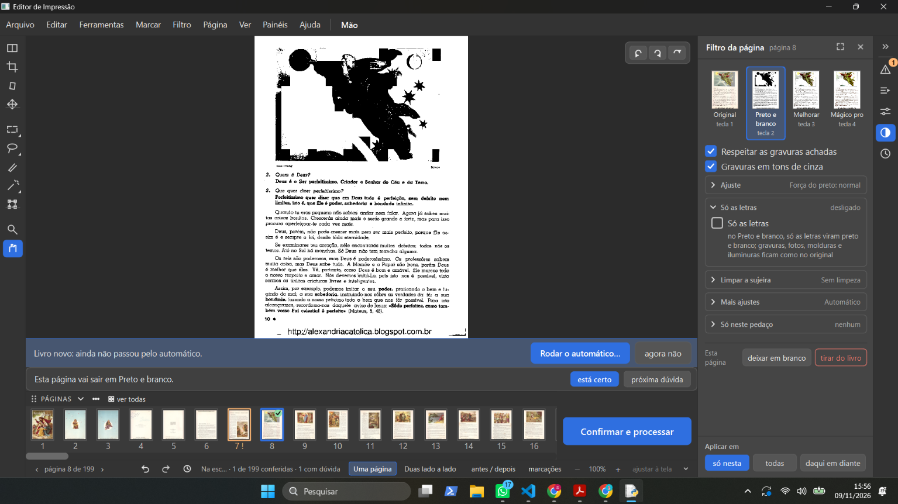
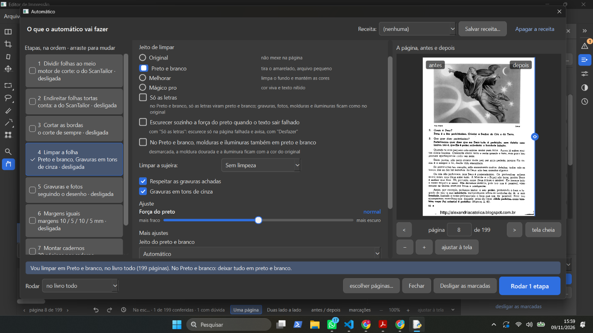
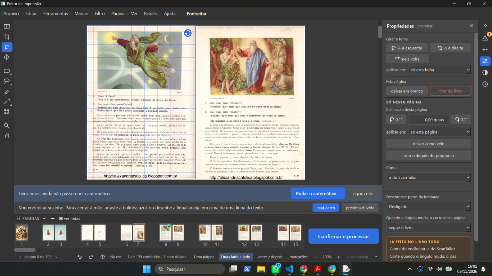
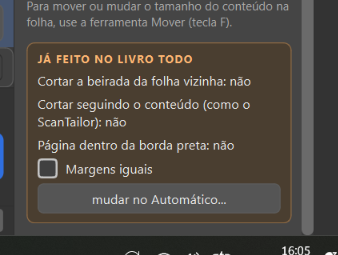

Versão testada: a versão de teste (obra-2026-10-26), livro de 199 páginas (alexandriacatolica), página 8.
Print: prints/01-manual-pb-gravura-estragada.png (painel "Filtro da página", Preto e branco, "Respeitar as gravuras
achadas" e "Gravuras em tons de cinza" ligados; a gravura sai em manchas pretas).
Print: prints/02-automatico-pb-gravura-certa.png (janela do Automático, mesma página, mesmas opções: a gravura sai em
tons de cinza, certa).
Palavras dele: "acabei de achar um problema no filtro preto e branco, todas aquelas mudanças que a gente tinha feito no na questão de respeitar gravura e tudo mais no manual não está funcionando, isso é um grande erro, porque aconteceu? porque o gerente, mas como pode ver no automatico está funcionando normalmente, só ficou meio confuso essa questão do respeitar gavura, e só as letras fazem a mesma coisa?"
Investigação da gerente (09/11, só leitura do código da versão de teste obra-2026-10-26):
core/etapas.py, marca_sozinho. A procura de gravuras só roda com "Limpar a folha" ligado (o Automático
do filtro, no livro ou na página). Com o filtro escolhido à mão num livro que nunca passou pelo Automático
("Livro novo: ainda não passou pelo automático", no print 1), a função para logo na primeira linha
(if not limpa_sozinho(...): return False), antes da "procura por dentro" que a caixinha "Gravuras em tons de
cinza" (P4, 02/11: "o cinza procura as figuras por conta própria") e o "Só as letras" precisam. Resultado: nenhuma
gravura achada, as duas caixinhas não têm o que respeitar, e a página inteira vira preto e branco.tests/test_decisoes_gravuras_cinza.py começam todas depois do Automático
(_depois_do_automatico). Nenhuma testa o livro novo com o filtro escolhido à mão. O pedido ao agente do conserto
de 02/11 também não citava esse caso.Prints: prints/03-endireitar-girar-duas-lado-a-lado.png (Endireitar, "Duas lado a lado", páginas 8 e 9) e
prints/04-quadro-ja-feito-no-livro-todo.png (quadro "JÁ FEITO NO LIVRO TODO" do Propriedades).
Palavras dele (respondendo "1" à pergunta 1 da investigação acima, e depois): "- o girar está funcionando, mas gostaria de poder selecionar duas paginas e girar as duas ao mesmo tempo. - eu não mexi em nada no automatico e fica esse aviso ai do lado, para que serve? eu pedi isso? - as vezes quando eu mudo de ferramenta ele tira o zoom que eu tinha dado, por exemplo quando eu vou de uma ferramenta para outra, principalmente quando eu vou para o cortar bordas. - pagina em branco funciona"
Destino: - Girar uma página (D-618): funciona (testado pelo Samuel em 09/11). - Página em branco pelo botão direito (D-623): funciona (testado pelo Samuel em 09/11). - Girar duas páginas escolhidas ao mesmo tempo: na grade "ver todas" já existe (D-487, "Na grade, com várias páginas escolhidas: girar ¼ para os dois lados"); na área de trabalho, não. Pergunta ao Samuel se quer também ali. - Quadro "JÁ FEITO NO LIVRO TODO": vem da D-051 (12/10, ele escolheu "B — Propriedades com duas partes: 'Só nesta página' e 'Para o livro todo'") e da D-619 (04/11: o quadro só mostra o que vale para o livro todo, com o botão "mudar no Automático..."). Explicado no chat. - Zoom que some ao trocar de ferramenta (principalmente ao ir para o Cortar as bordas): defeito novo, para a Lista de bugs.
Palavras dele: "1- sim / 2- não entendi"
Destino:
- Pergunta 1 ("Posso trocar um teste antigo e consertar um defeito que apareceu no caminho?"): sim. O agente
aplica a troca do test_p195 e a mudança em ui/tarefas.py e roda os testes de novo. Anotado na Central
(respostas/gravura-a-mao-testes).
- Pergunta 2 (o Automático depois do Preto e branco à mão): não entendi. A gerente explicou no chat com o caso
da página 8 e pediu ao agente as provas (página 8 à mão; depois do Automático sem "Gravuras e fotos"; o mesmo
com "Gravuras em tons de cinza"). A pergunta volta na Central com as provas.
Palavras dele: - "Se a pagina ou folha já tiver passado por modificações antes de entrar no automatico o automatico vai perguntar se quer mexer nela né, e se já foi procurado gravuras em uma pagina, não precisa procurar de novo." - "mas seria bom ter um botão para ele recalcular e procurar novamente as gravuras ou fotos, caso ele erre em alguma pagina." - "não, eu falei para dar um aviso, uma mensagem na tela perguntando se quer mexer nessas paginas que já foram mexidas, isso já existe no programa?" - "só verifica se ele vai perguntar quando eu tiver feito mudanças no manual ou até em outras rodadas de automatico" - "pq as vezes eu rodo automatico em só algumas paginas de filtro e depois que montar caderno em todas, o automatico tem que funcionar certo e não dar erro nessa parte." - "mas caso o o automatico for mudar alguma coisa que foi feito na ultima rodada ele deve perguntar."
Destino:
- O aviso existe (D-004, 28/09: "Páginas mexidas à mão", com "Pular as N" / "Rodar nelas também" / "cancelar"). Hoje vale só para o que foi feito à mão, nas etapas que vão rodar. Os 16 testes do aviso passaram (gerente, sem janela).
- O botão de procurar de novo já existe: ferramenta Marcar, "detectar automaticamente", e menu Marcar → "Procurar de novo".
- Perguntar também antes de mudar o que uma rodada anterior do Automático fez: decisão nova, D-660 (não construída).
- Verificador testando o caminho de hoje (filtro em algumas páginas, depois cadernos no livro todo), sem janela.
Relatório em relatorios/automatico-mexidas-2026-11-09/ no ramo da versão de teste.
Página 8 do Na escola de Jesus, sem janela, pela conta do programa (imagens em
relatorios/gravura-a-mao/imagens/q2-*.jpg no ramo gravura-a-mao-2026-11-09):
- (A) Preto e branco à mão com "Respeitar": gravura em cinza.
- (B) Depois o Automático só com "Limpar a folha", respondendo "Rodar nelas também": manchas pretas (o aviso diz que passa por cima).
- (C) O mesmo com "Gravuras em tons de cinza" marcada: igual à (A).
- (D) O mesmo respondendo "Pular": manchas pretas. Defeito pela D-004 ("Pular: elas ficam como você deixou").
A gerente tinha dito no chat que o "Pular" guardava a gravura; estava errado, e foi corrigido no chat.
Palavras dele: "1- ele aplica em todas se eu mandar? 2- 3- anote para arrumar na proxima rodada - já entra na lista 4- não entendi · Quando vão entrar as outras mudanças? · e cade aquela lista que você tinha me passado de problemas que estavamos resolvendo."
Destino:
- Entram agora (depois dos testes no PC): D-659, D-661, os dois defeitos achados no caminho (trabalho por trás no livro anterior; gravura achada no tamanho errado) e a troca do teste p195.
- Fila de consertos (a de 07/11), acrescentados para a próxima rodada: D-660 (perguntar antes de mudar o que a última rodada do Automático fez) e as caixinhas do Automático voltarem desmarcadas depois de rodar (resposta dele de 08/11, n0411-caixinhas-depois-de-rodar).
- Testes que ficam instáveis no PC carregado ou em rodada longa (iguais na obra, sem o conserto): test_d611 da tira em pares, test_folhear_com_o_disco_lento_nao_para_a_janela, e na rodada de 09/11 também d621, d015, girar_na_tela e gravura_na_aba_marcar. Defeito dos testes, não do programa.




Editor de Impressão · gerado em 10/11/2026 às 08:51